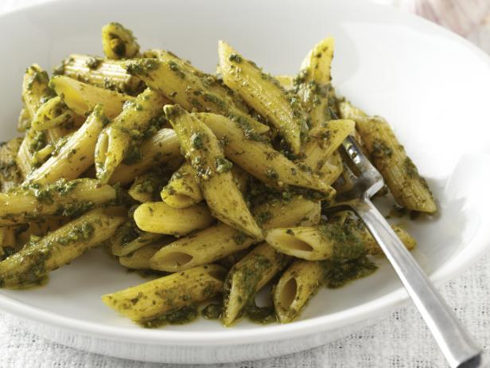

Pesto Penne Pasta

Description
The below will walk you through what is needed to make Pesto Penne Pasta. Enjoy!
Ingredients
- Penne pasta
- Basil pesto
- Cherry tomatoes
- Parmesan cheese
- Salt
- Pepper
Directions
- Bring a large pot of water to a boil over medium-high heat. Add penne pasta and a little bit salt, and cook till al dente (fully cooked but still firm) about 8-10 minutes, or according to package directions. Do not overcook the pasta. Turn off the heat and reserve at least ¼ cup of pasta water, then drain the pasta in a colander and let it cool for 1 minute.
- Transfer pasta into a large mixing bowl and add pesto and reserved pasta water (¼ cup or more, if desired). Season with salt and pepper and toss well to coat. Stir in cherry tomatoes and parmesan cheese.
- Serve immediately. Sprinkle extra parmesan on top, if desired.